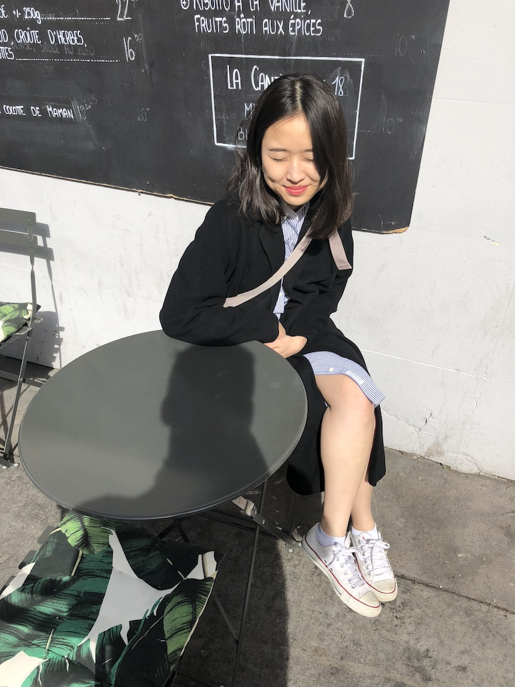

About Me

Hi there!
I am a NYC based fashion girl turned full stack web developer. When I discovered how destructive the fashion industry had become with fast fashion, I sought out to find a home in an industry that builds rather than destroys. After going through Immersive Software Engineering Bootcamp, I am happy to say that I have now found the perfect career path for puzzle-loving, data-junkie, passionate, me.
I am a NYC based fashion girl turned full stack web developer. When I discovered how destructive the fashion industry had become with fast fashion, I sought out to find a home in an industry that builds rather than destroys. After going through Immersive Software Engineering Bootcamp, I am happy to say that I have now found the perfect career path for puzzle-loving, data-junkie, passionate, me.
Experience
+ Assistant Buyer
SAKS FIFTH AVENUE OFF FIFTH + GILT (HBC)
Aug 2017 - Oct 2018
Aug 2017 - Oct 2018
+ Assistant Planner
SAKS FIFTH AVENUE OFF FIFTH + GILT (HBC)
Jul 2016 – Aug 2017
Jul 2016 – Aug 2017
+ Merchandising Assistant
SAKS FIFTH AVENUE OFF FIFTH + GILT (HBC)
Mar 2015 – Jul 2016
Mar 2015 – Jul 2016
+ Research Assistant
HAVER ANALYTICS
June 2014 – March 2015
June 2014 – March 2015
Education
+ Flatiron School
Full Stack Web Development
NY, NY
JAN 2018
NY, NY
JAN 2018
+ Hunter College CUNY
Bachelor of Arts in Economics, Media Studies Minor
NY, NY
JAN 2015
NY, NY
JAN 2015
Projects
capsule wardrobe two.
React, Redux, ruby on rails, jwt auth, thunk/axios, google maps api, cloudinary, darksky, materialize/bootstrap/custom
css
SOLO PROJECT ---
Going from maximalist shopaholic to humbly practicing minimalism, I have been trying to adopt capsule wardrobing (definition below). This app uses a similar concept as capsule wardrobing - encouraging the user to value the items they already have in his/her closet and shaping the user's behavior to sell or donate the unwanted item.
The full description of walk-through, included in the video.
--From Wikipedia: "Capsule wardrobe, coined by Susie Faux, the owner of a London boutique called "Wardrobe" in the 1970s.. .is a collection of a few essential items of clothing that don't go out of fashion, such as skirts, trousers, and coats, which can then be augmented with seasonal pieces."
korean 101.
React, javascript, chart.js, semantic ui, ruby, Object oriented application, HTMLAudio
SOLO PROJECT ---
This React app allows the user to learn all 14 consonants in Korean alphabet and words that start with the letter. The
user is given the consonant on the left (in order) and is able to play the sound of the letter. The options/words are
provided on the right, with the sound of the words.
The video shows an example of a user getting the words incorrect in the first play, and then completing the application - which leads the user to the end page where the progress of the user is shown on a line graph, based on the tries.
I teach Korean to pre-k students on the weekends and thought about making an app for them!
capsule wardrobe one.
Single-Page App, Javascript, JSON, Semantic UI, Ruby, OOP, Postgresql
PARTNER PROJECT ---
This app encourages capsule wardrobing (see Capsule Wardrobe 2 for definition). This single-page app shows the user how many times an item in his/her closet really gets worn and sends a reminder that many different outfits can come from little.
Video description: top section shows all the outfits made with items below. The user is able to select an item from below to create "outfit of the day." Once "append" button is clicked, the outfit collection gets rendered to the back of the carousel.
Not in the video: delete + add item function.